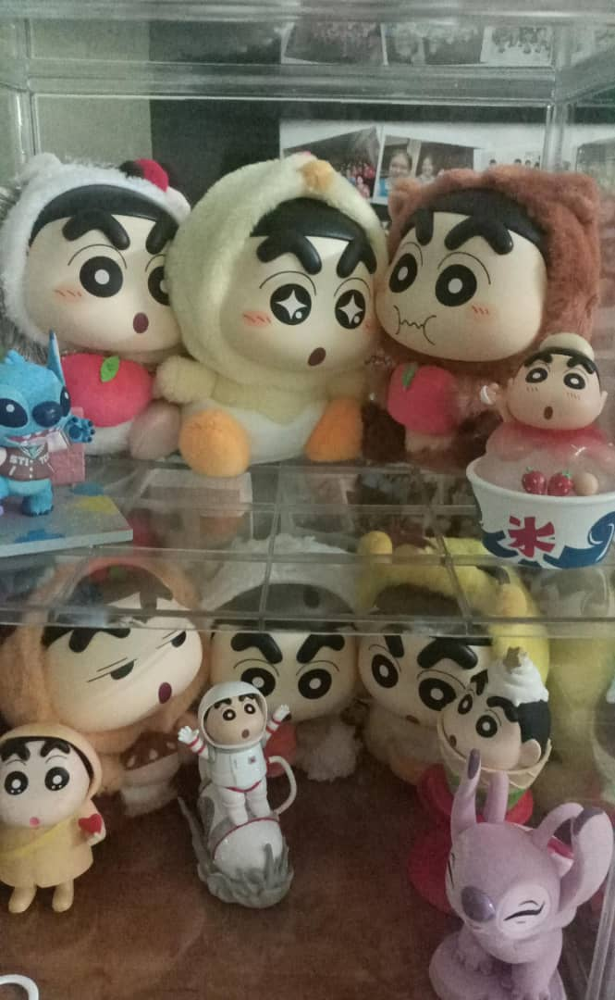

Blind box become a trend for youths
By SEOW WEI SIN | Sunday, 17 Aug 2025 | 10:07 AM MYT
Blind Box:The blind box is from the Disney series. It is bought at Miniso. Photo by Seow Wei Sin.
KUALA LUMPUR: In recent years, many youths buy blind boxes. Blind boxes have set off a wave of enthusiasm around the world, including Malaysia, China and Thailand.
Blind boxes refer to mystery boxes, customers do not know what style they will get until they open the box. The item in the blind box is random. It is all about luck.
The blind boxes usually are as part of a themed series. As per The Star, the “ritualized uncertainty” has drawn Gen Z and millennial people attention.
According to a survey conducted by youngsters within the ages of 18 to 22 in Kuala Lumpur, 66.7% youths collect the blind boxes.
Most of them are interested in blind boxes because of trendy or cute character designs and enjoy the thrill of surprise. They mostly like to buy anime-based character and Disney series blind boxes.

Crayon Shin-Chan Lover:This is a part of blind box collection from You Rou Xin. She uses her part-time job salary to buy them. Photo by You Rou Xin.
About 50% of the youths buy blind boxes every few months. The rest of the 30% of the youths buy them every month, and 20% of the youths have only bought them once or twice.
A total of 50% of the youths spent more than RM300 in total on blind boxes. The rest of the 30% of the youths spent RM1 to RM 100 on them, and 20% of the youths spent RM101 to RM200 on them.
Almost 70% of the youths use savings to buy blind boxes. The rest of the 20% and 10% is from part-time job salary and directly from parents.
Some parents support their children in buying blind boxes, while others see it as a waste of money and choose not to care about it.
Most of them like to buy blind boxes in physical shops, especially Pop Mart.
One of the respondents, Elyse Wong Wee Shuen, a 19-year-old university student said that she prefers to buy blind boxes in a physical shop. This is because it feels more authentic and she can experience the excitement of choosing them in person.
She also mentioned that the most expensive blind box she has ever bought is from the Dimoo Disney series plush collection. It costs RM 120.
Blind box economy has become a marketing strategy. It attracts youths’ attention successfully.